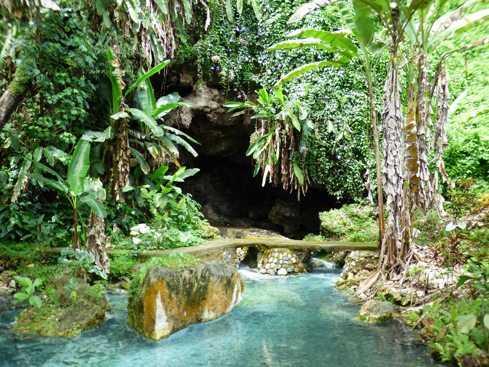
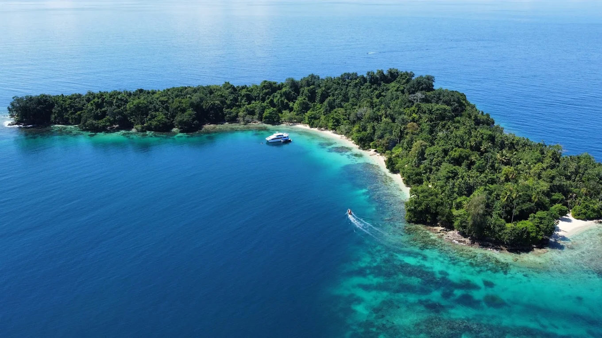
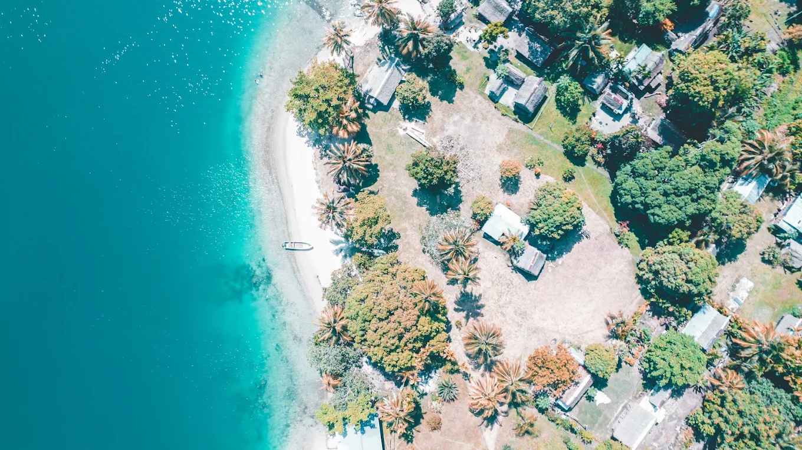
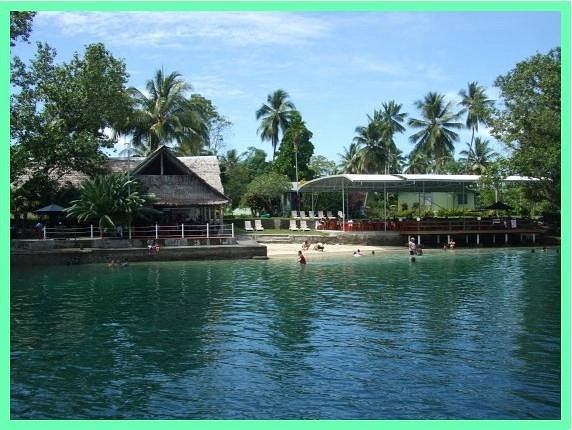

Village visits
Join guided trips to communities such as Bilbil, Riwo, Siar and Kranket. Meet families, watch daily rhythms and share stories over coconut and fresh produce.
Living culture
Village visits, sing-sings, traditional crafts and festivals — experiences that connect you with the communities who call this coast home.
A province of living cultures
Madang is one of the most culturally diverse places on Earth. Roughly a quarter of Papua New Guinea’s languages are spoken here. From mountain communities in the Simbai highlands to coastal villages and island fishing communities, traditions of song, dance, craft and storytelling remain strong. Visitors are welcomed with genuine hospitality and the chance to experience daily life — not only staged performances.
Ways to connect
Save the ones that speak to you. Your choices stay in this browser so you can return to them later.
Join guided trips to communities such as Bilbil, Riwo, Siar and Kranket. Meet families, watch daily rhythms and share stories over coconut and fresh produce.
Women of Bilbil still shape clay pots by hand using techniques passed down for generations. Watch demonstrations and learn how pottery fits into daily life and trade.
Feel the pulse of garamut slit drums and kundu hand drums. Dancers in bilas (traditional dress) share songs and stories that keep identity and history alive.
Combine snorkelling with short village stops. Learn about fishing practices, local food and the slower rhythm of life on the Bismarck Sea.
Taste fresh seafood, root crops, coconut and communal mumu-style cooking. Madang’s markets offer tropical fruit, bilums and everyday coastal ingredients.
Visit the local museum and cultural centre for carvings, ceremonial objects and history, then explore markets for bilums, shell jewellery and handmade work.
Go deeper
Expand each section to learn more about festivals, traditional practices and how to travel with care.
The annual Madang Festival (usually early to mid-June) is the province’s main cultural event. Groups from across the six districts gather for sing-sing performances, canoe displays, craft markets and community celebration.
Confirm current dates with local operators or the Madang Visitors & Cultural Bureau, as schedules can change.
Many communities continue skills that shape everyday life:
Buying crafts directly from makers or community markets supports livelihoods and helps keep these skills strong.
Madang’s cultural landscape is exceptionally varied. Mountain communities live on high ridges, river people build stilt houses, and coastal and island groups specialise in fishing and gardening. Languages and customs can change over short distances.
Visitors are usually met with warmth. Simple Tok Pisin greetings such as “Gude” (good day) and “Tenkyu” (thank you) are appreciated. Always ask before photographing people, especially during ceremonies, and follow the guidance of local hosts.
Accessible villages and islands for cultural visits include Bilbil, Riwo, Siar, Kranket and communities around Madang harbour and the north coast.
Respectful travel protects culture and ensures communities benefit:
Done well, cultural tourism provides income, pride and reasons to keep traditions strong for the next generation.
Places to begin
Scenic landmarks, nature reserves, islands and coastal stays — places that pair well with Madang’s cultural experiences.
A tall beacon built in 1959 on the peninsula to honour Allied coastwatchers of World War II. It offers panoramic views of the harbour and nearby islands.
A quiet coastal park with a calm sandy beach, picnic spots under large shade trees, and a historic World War II machine gun left from the conflict.

Along the south coast road: a sulphur hot-spring stream, large eels and turtles, limestone caves and surrounding rainforest — a short nature stop from town.

Idyllic offshore tropical islands with crystal-clear water and vibrant coral gardens. Popular for swimming, snorkelling and easy day trips from Madang.

A tranquil local island connected by shallow waters. Great for day trips, walking along the beach and experiencing quiet coastal village life.
A hidden paradise off the Riwo north coast: clear turquoise water, white sand and healthy reef. Uncommercialised — pack food and water, arrange a banana boat from Riwo, and respect local kastom fees.

A waterfront retreat about 20 km north of town on a former coconut plantation. Beachfront bungalows, healthy fringing reef, a WWII plane wreck just offshore, and grounds for kayaking and relaxed stays.
Travel with care
A few simple habits make a big difference for the people who welcome you.
Choose operators who share benefits fairly and employ local guides and performers.
A smile and a clear request go a long way. Some people or ceremonies prefer not to be photographed.
Take all rubbish with you and minimise single-use plastics on village and island visits.